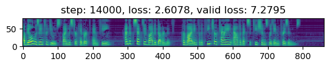

from fastspeech.modules import *
from fastspeech.data import *
from fastspeech.training import *
from fastspeech.visualize import *
from fastspeech.preprocess import ZScoreNormalization, MinMaxNormalization, NoNorm
from torch.utils.data import DataLoader
from torch.optim import Adam
from torch.optim.lr_scheduler import OneCycleLR
import torch.nn.functional as F
from functools import partial
from pathlib import Path
import json
import torchpath = Path("../../data/LJSpeech-1.1/wavs/")
path_vocab = Path("../../data/CMUDict/cmudict-0.7b.symbols.txt")
path_stats = Path("../sample_data/lj_mel_stats.json")with open(path_stats, 'r') as f: stats = json.load(f)stats = {key: float(stats[key]) for key in stats}
stats["top_db"] = 35
stats{'min_val': -0.000100009995,
'max_val': 12.625555,
'mean': 0.0021890362,
'std': 0.02285596,
'top_db': 35}cut = int(13084*.9)
ds = TTSDataset(path, path_vocab, ZScoreNormalization, ds=slice(0, cut),
preload=True, stats=stats)
ds_v = TTSDataset(path, path_vocab, ZScoreNormalization, ds=slice(cut, None),
preload=True, stats=stats)normalized = ds.mels[0]
denormalized = ds.norm.denormalize(normalized)
show_mels([normalized, denormalized])bs = 48
n_workers = 2
pres_worker = True
collate_fn_p = partial(collate_fn, pad_num=ds.vocab.pad_num, norm=ds.norm)
dl = DataLoader(ds, bs, shuffle=True, num_workers=n_workers, pin_memory=True,
collate_fn=collate_fn_p, persistent_workers=pres_worker)
dl_v = DataLoader(ds_v, bs, shuffle=True, num_workers=n_workers, pin_memory=True,
collate_fn=collate_fn_p, persistent_workers=pres_worker)device = torch.device("cuda" if torch.cuda.is_available() else "cpu")
devicedevice(type='cuda')hs, no = 256, 80
log_interval = 500
clip = 5.
steps = 500000
config = {
"model": {
"embedding_size": len(ds.vocab.vocab), "hidden_size": hs, "num_bins": no,
"num_encoders": 4, "num_decoders": 4,
"encoder": {
"hidden_size": hs,
"multi_head_attention": {"hidden_size": hs, "num_attention_heads": 2,
"hidden_dropout_prob": 0.1},
"conv_net": {"hidden_size": hs, "kernal_sizes": [9,1], "filter_size": 1024,
"hidden_dropout_prob": 0.1}
},
"decoder": {
"hidden_size": hs,
"multi_head_attention": {"hidden_size": hs, "num_attention_heads": 2,
"hidden_dropout_prob": 0.1},
"conv_net": {"hidden_size": hs, "kernal_sizes": [9,1], "filter_size": 1024,
"hidden_dropout_prob": 0.1}
},
"duration_predictor": {"hidden_size": hs, "kernal_sizes": [3,3], "filter_size": hs,
"hidden_dropout_prob": 0.5},
# "postnet": {"hidden_size": no, "kernal_size": 5, "filter_size": 512,
# "hidden_dropout_prob": 0.5, "num_layers": 5},
},
"optim": {"lr": 1e-4, "betas": (0.9, 0.98), "eps": 1e-10, "weight_decay": 0.},
"scheduler": {"lr_mul": 1., "d_model": hs, "n_warmup_steps": 4000},
# "scheduler": {"max_lr": 1e-4, "total_steps": steps},
}
learner = FastspeechLearner(dl, ds.norm, FastSpeech, Adam, TransformerScheduler,
config, mae_loss, F.mse_loss, mae_loss, fp_16=False,
dl_v=dl_v, grad_clip=clip, device=device,
log_interval=log_interval)count_parameters(learner.model)23532881file_path = "../checkpoints/save_590.pt"
checkpoint_steps = 42500 + 65000 + 295500
state_dict, config, norm = load_checkpoint(file_path, device.type)
learner.load_model_state_dict(state_dict)
learner.scheduler.n_steps = checkpoint_steps
steps = steps - checkpoint_stepslearner.fit(steps)


KeyboardInterrupt: plot_loss(learner.loss_history['a'])plot_loss(learner.loss_valid_history['a'], 'validation')mels = list(map(lambda x: x[0], learner.mel_history))